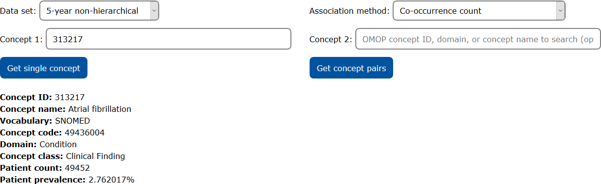
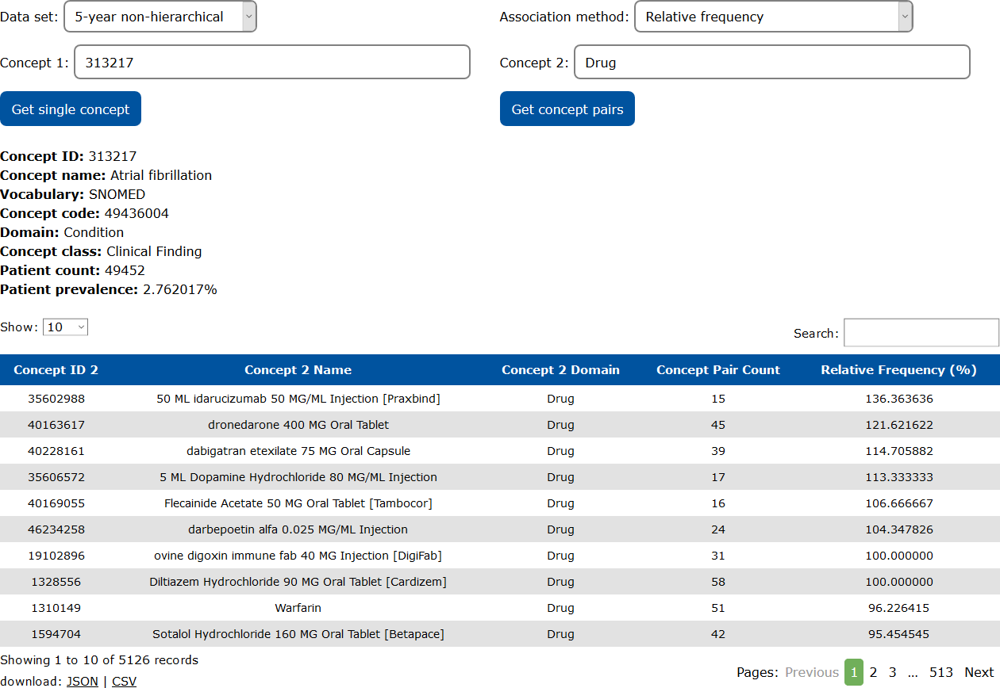
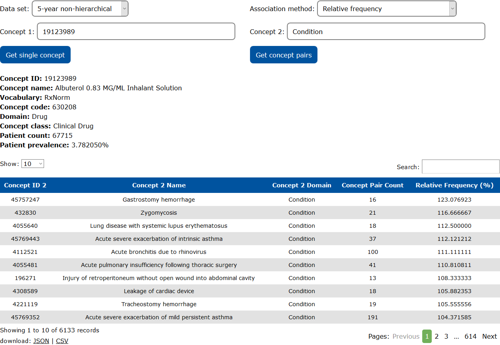

Columbia Open Health Data (COHD) provides access to counts and patient prevalence (i.e., prevalence from electronic health records) of conditions, procedures, drug exposures, and patient demographics, and the co-occurrence frequencies between them. Count and frequency data were derived from the Columbia University Irving Medical Center's OHDSI database including inpatient and outpatient data. Counts are the number of patients with the concept, e.g., diagnosed with a condition, exposed to a drug, or who had a procedure. Frequencies are the number of patients with the concept divided by the total number of patients in the dataset. Clinical concepts (e.g., conditions, procedures, drugs) are coded by their standard concept ID in the OMOP Common Data Model. To protect patient privacy, all concepts and pairs of concepts where the count ≤ 10 were excluded, and counts were randomized by the Poisson distribution.
Two released data sets and one beta data set are available:
While the lifetime dataset captures a larger patient population and range of concepts, the 5-year dataset has better underlying data consistency. Please read our open publication in Scientific Data for an in depth description of our methods, results, and a discussion of the nuances of interpreting these data.
In the beta release of the 5-year hierarchical data set, the counts for each concept include the patients from all descendant concepts. For example, the count for ibuprofen (ID 1177480) includes patients with Ibuprofen 600 MG Oral Tablet (ID 19019073 patients), Ibuprofen 400 MG Oral Tablet (ID 19019072), Ibuprofen 20 MG/ML Oral Suspension (ID 19019050), etc.
COHD was developed at the Columbia University Department of Biomedical Informatics as a collaboration between the Weng Lab, Tatonetti Lab, and the NCATS Biomedical Data Translator program (Red Team). This work was supported in part by grants: NCATS OT3TR002027, NLM R01LM009886-08A1, and NIGMS R01GM107145.
Calculates the chi-square statistic and p-value between pairs of concepts. Results are returned in descending order of the chi-square statistic. Note that due to large sample sizes, the chi-square can become very large. An adjusted p-value is also calculated, using Bonferonni correction with the total number of pairs of concepts in the data set. The expected frequencies for the chi-square analysis are calculated based on the single concept frequencies, assuming independence between concepts. P-value is calculated with 1 DOF.
Calculates the natural logarithm of the ratio between the observed count and expected count for the pair of concepts. Expected count is calculated from the single concept frequencies, assuming independence between the concepts. Results are returned in descending order of ln_ratio.
expected_count = Count1&2 * num_patients / (Count1 * Count2)
ln_ratio = ln(observed_count / expected_count)
Calculates the relative frequency (i.e., conditional probability) between pairs of concepts. Results are returned in descending order of relative frequency. Note that due to the randomization of the counts, the calculated relative frequencies can exceed the limit of 1.0.
relative_frequency = Count1&2 / Count2
COHD can be used to retrieve the patient prevalence of individual concepts. In this example, information for the condition "Atrial fibrillation" (OMOP concept ID 313217) is retrieved from the 5-year non-hierarchical data set. The results show the concept definition (concept ID, concept name, concept domain, concept class, source vocabulary for the OMOP concept, and concept code in the source vocabulary) and the occurrence data (patient count and patient prevalence).
COHD can be used to retrieve association data calculated from the co-occurrences of pairs of concepts. In this example, the relative frequency of drugs associated with the condition "Atrial fibrillation" (OMOP concept ID 313217) is retrieved from the 5-year non-hierarchical data set. The relative frequency informs investigators that among patients who have taken the drug identified in each row, this proportion of patients experienced atrial fibrillation at some time within the 5-year inclusion period of the data set. Note that the relative frequency can exceed the upper limit of 100% due to the Poisson randomization.

Similar to Example 2, in this example, the relative frequency of conditions associated with the drug "Albuterol 0.83 MG/ML Inhalant Solution" (OMOP concept ID 19123989) is retrieved from the 5-year non-hierarchical data set. The relative frequency informs investigators that among patients who have had the condition identified in each row, this proportion of patients have taken "Albuterol 0.83 MG/ML Inhalant Solution" at some time within the 5-year inclusion period of the data set. Note that the relative frequency can exceed the upper limit of 100% due to the Poisson randomization.

The COHD RESTful SmartAPI provides a more powerful method to interact with the COHD data. The web user interface provides access to a few of the most frequently used endpoints in the COHD API. The COHD API additionally provides access to metadata, methods to explore the OMOP concept hierarchy, and cross-referencing between OMOP and external ontologies.
The fully released data sets can be directly downloaded from FigSHARE.